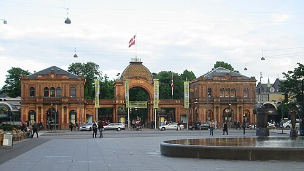
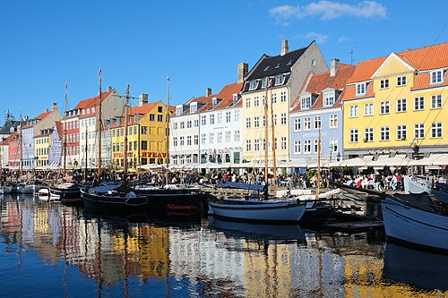
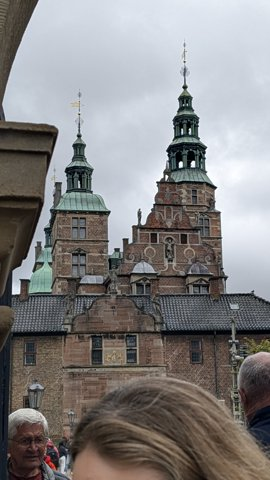

This map shows 20 of the most-searched sights in Copenhagen as photo spots, ranked by how often people search for them: Tivoli Gardens, Nyhavn, Rosenborg Castle, Amalienborg and Christiansborg lead the list. Every spot has a pin on the subject and a phone icon showing where to stand, with tips for shooting it on your phone: which lens to use, how to frame it, a settings tip and the best time of day. Directions and Navigate buttons take you to the standing point on foot or by public transport. 3 spots are free to view; the full map is for members.
The 3 free photo spots
1Tivoli Gardens

Tivoli Gardens is an amusement park and pleasure garden right in the middle of Copenhagen. It opened on 15 August 1843, which makes it the second-oldest operating amusement park in the world. From the start it mixed flower gardens, cafés and rides with buildings in the style of an imaginary Orient, and coloured lamps lit the grounds after dark. That mix is why it photographs so well. The Moorish-style Nimb building and the park gate make a bold, symmetrical front, and in the evening the lit arches and lanterns give you a ready-made subject. The wooden roller coaster Rutschebanen dates from 1914 and is still running. The Chinese-style pantomime theatre has stood here since 1874. The park is also the most visited in Scandinavia, with 4.25 million visitors in 2024, so expect people in your shots at busy times. For the classic front view, stand on the pavement on Vesterbrogade outside the main entrance, in front of the Nimb building. Stand square-on to the Nimb facade and fit in the gate and the lit arches. If you have time for a second angle, Rådhuspladsen gives a wider view from the city side. Tivoli Lake shows the Chinese Pagoda and Tivoli Castle reflected in the water at dusk, but that spot is inside the park, so you need an entry ticket.
Where it is: Tivoli Gardens is in central Copenhagen, next to the Central rail station. The main entrance and the Nimb building face Vesterbrogade.
Shooting it on your phone
Lens: Start with the default lens (1x) from the pavement, so the facade and gate keep a natural shape. If the pavement is crowded and you cannot step back, switch to the ultra-wide (0.5x) to fit the whole front in. Keep the phone level so the edges do not lean.
Where to stand: Stand on Vesterbrogade (on the pavement outside the main entrance, in front of the Nimb building). The Moorish-style Nimb facade and the park gate, framed straight on, with the lit arches and lanterns as the focus after dark. On the pavement outside the main entrance, in front of the Nimb building. From here you see the Moorish-style Nimb facade and the park gate straight on, with the lit arches and lanterns as the main subject after dark.
Framing: Turn on gridlines and line up the centre of the gate with the middle of the frame, with the facade filling the upper part. Wait for a gap in the passers-by, or let a few people stay in the lower corner to show scale. For a different view, try Rådhuspladsen for the park's skyline and lights in the distance with the square in front. Tivoli Lake, inside the park, is the choice for reflections of the Pagoda and Tivoli Castle.
Settings tip: After dark, let night mode do its work and brace your elbows against your body or a railing. Tap on the brightest lit arches to set focus, then slide the exposure down a little so the lights keep their colour and detail instead of burning out. Take a few frames and keep the sharpest one.
Best time: After dark, when the facade is lit. If you would rather have fewer people in the frame, an early-morning visit is quieter, but the lights will not be the main feature then.
2Nyhavn

Nyhavn is the old canal harbour in the middle of Copenhagen, lined with tall, brightly painted townhouses and moored wooden ships. It was dug between 1670 and 1675 under King Christian V and was once a busy, rowdy port. Today the quay is pedestrianised and the old ships are part of a heritage harbour. It photographs well because the colours, the water and the masts all sit in one straight line, so even a quick snap looks composed. The north side has the oldest house, No. 9, dating from 1681. Hans Christian Andersen lived at several addresses here, including No. 67. The classic picture is taken from the bridge over the canal, where the full row of houses, boats and water fits in one frame. If the bridge is too crowded, Inderhavnsbroen, the footbridge and cycle bridge across the harbour mouth, gives a view of Nyhavn from the water side. Expect people on the quayside and café terraces, so leave a little space around your subject and take a few shots as the crowd shifts. Keep the phone steady against the railing, and wipe the lens first, as harbour air can leave a faint film on it.
Where it is: Nyhavn is in central Copenhagen, running from the square Kongens Nytorv down to the Inner Harbour, just south of the Royal Playhouse.
Shooting it on your phone
Lens: Start with the default lens (1x) for natural-looking houses. Switch to ultra-wide (0.5x) if the bridge is busy and you cannot step back. Use telephoto (2x-5x, depending on your phone) for details such as a single boat, a mast or a row of window frames.
Where to stand: Stand on Nyhavnsbroen (bridge at the canal's inner end; sources disagree on which end, so check on the map). The full row of coloured canal houses with moored wooden boats and the water in one frame. The aim is a photo that shows the full row of coloured canal houses, the moored wooden boats and the water in one frame.
Framing: Turn on gridlines and line the quay up with one of the lower grid lines so the houses stay upright. Put the boats in the lower third and the houses in the middle, with a little sky above. For a different view, walk to Inderhavnsbroen for Nyhavn seen across the water; it opens for boats, so stand clear of the central section when the horn sounds.
Settings tip: Tap on the houses to focus, then drag the exposure slider down slightly so the sky and the bright colours do not wash out. Take a Live Photo too, as boats and passers-by can give you a better frame than the still you aimed for.
Best time: One guide recommends late afternoon. The north-side houses are said to catch good light mainly in the morning and early afternoon in summer, and the terraces fill up from late morning, so going early means fewer people.
3Rosenborg Castle

Rosenborg Castle is a Dutch Renaissance building in Copenhagen, set in the King's Garden (Kongens Have). It began as a country summerhouse in 1606, was extended several times and reached its present form by 1624. Christian IV was behind it, and it is one of his many building projects. Danish rulers lived here until around 1710, and it was used as a royal residence only twice after that, both times in emergencies. Today it is a museum of the Royal Collections and holds the Crown Jewels. It has been open to the public since 1838.
It photographs well because the castle stands in open parkland. In summer, flowers bloom in the castle garden, which can add colour in the foreground. The garden is the country's oldest royal garden and is busy with visitors, so wait a moment for a clear gap in the people on the paths.
Start with a wide shot of the full castle, then move in with zoom for the towers, rooflines and brickwork. Keep your phone level so the tall walls do not lean. Interior photography, if allowed at all, is a separate matter, so check the official site before you go.
Where it is: Rosenborg Castle stands inside Kongens Have (the King's Garden) in Copenhagen. Next to it are the barracks of the Royal Life Guards.
Shooting it on your phone
Lens: Start with the default lens (1x) for the whole castle and its garden. Switch to telephoto (2x-5x, depending on your phone) for towers, roof details and windows. Use ultra-wide (0.5x) only if you walk much closer and want the full height in the frame.
Where to stand: Stand about 65 m north-west of the subject, at the phone icon on the map, and face south-east. This gives you the castle with open garden in front of it.
Framing: Turn on the gridlines and line up the castle on one of the vertical lines, with the building in the upper two-thirds and paths or flowerbeds below. Keep the phone upright and level so the walls stay straight. Wait for a gap in the walkers if you want an empty foreground.
Settings tip: Tap on the castle walls to set focus, then drag the exposure slider down slightly if the sky is bright, so the brick and roof detail do not wash out.
Best time: Early morning or late afternoon usually gives softer light and fewer people. In summer the flowers in the garden add colour.
17 more spots for members
These spots are on the map as grey numbered pins. Where to stand, the phone tips, photos and directions for them come with Explorer membership.
- 4Amalienborg · members
- 5Christiansborg Palace · members
- 6Freetown Christiania · members
- 7The Little Mermaid · members
- 8Kastellet · members
- 9Strøget · members
- 10The Black Diamond (Royal Library) · members
- 11The Round Tower · members
- 12Frederik's Church (the Marble Church) · members
- 13Børsen (the old Stock Exchange) · members
- 14Copenhagen Opera House · members
- 15Church of Our Saviour · members
- 16Botanical Garden palm house · members
- 17Gefion Fountain · members
- 18Langelinie promenade · members
- 19Nyboder's yellow rows · members
- 20St. Alban's Church · members
Get every spot with Explorer membership
Explorer opens every spot on every map in the library: where to stand, how to frame it on your phone and how to get there, plus the Xdatrys Maps app with maps saved on your phone for use without signal. $9.99 a month or $59.99 a year; cancel any time.
Join Explorer Compare free and Explorer
Not ready to join?
Get Pocket Lens, our free daily smartphone travel photography newsletter.
Free, and you can unsubscribe at any time. If the form does not show, sign up on our newsletter page.
Questions
What are the top photo spots in Copenhagen?
The first three on this map are Tivoli Gardens, Nyhavn and Rosenborg Castle. They are ranked by how often people search for them. The full map has 20.
Where should I stand to photograph Tivoli Gardens?
Stand on Vesterbrogade (on the pavement outside the main entrance, in front of the Nimb building). Start with the default lens (1x) from the pavement, so the facade and gate keep a natural shape.
When is the best time to photograph Nyhavn?
One guide recommends late afternoon. The north-side houses are said to catch good light mainly in the morning and early afternoon in summer, and the terraces fill up from late morning, so going early means fewer people.
How do I get to Rosenborg Castle?
No public transport stop is listed for this spot.
Credits
Map data © OpenStreetMap contributors (ODbL); base map built with Protomaps from OpenStreetMap data. Photos from Wikimedia Commons, credited under each photo with their licence. Background reading for the free spots: Tivoli Gardens, Nyhavn, Rosenborg Castle (Wikipedia, CC BY-SA). Access rules and opening times change: check before you go.